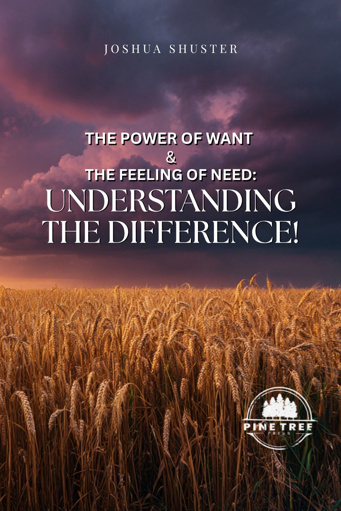

New Release
The Power of Want
& The Feeling of Need
Are you tired of saying “yes” when you know you should say “no”? Educator and mentor Joshua Shuster explores the difference between what we want and what we truly need — and offers a practical framework for choosing purpose over impulse.

Understanding the DifferenceFeatured Book
The Power of Want & The Feeling of Need
In The Power of Want & The Feeling of Need, educator, mentor, and author Joshua Shuster explores the powerful influence that wants and perceived needs have on our decisions, behaviors, relationships, and overall well-being. Drawing from more than a decade of experience working with students, families, and individuals, Shuster offers practical insights and real-world examples to help readers better understand the motivations that drive their choices.
This thought-provoking guide challenges readers to examine the difference between genuine necessities and desires that often masquerade as needs — so you can make more intentional decisions, strengthen your financial habits, and focus on what truly adds value to your life.
What Readers Are Saying
A small book with a mighty message
This book is an easy read with impact. Small but mighty message! The author reminds us of how important it is to stop and smell the roses and not be so concerned with everyone else’s roses! I purchased this for my college kids and their friends to remind them what a gift what they have is and not what everyone else has. We often now say when asked to buy something “is this a need or a want?”. Great message.